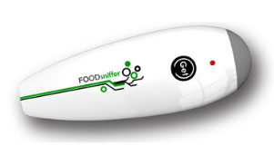
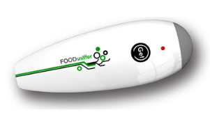

Natural food has a lifetime. Cooked and perishable food items such as bread, milk have considerably short life span. Even though other food items may have longer life span, but eventually all start decomposing.
Once food has been harvested, gathered or slaughtered it begins to deteriorate until eventually it becomes unfit for consumption. This deterioration is known as decay and leads to food spoilage. Consumption of spoiled food may cause food poisoning, early detection can also help in food wastage.
Having faced similar problems myself and my flatmates, I found a lot of people around me who would face difficulty in tracking food health and consuming it before it might become stale. This device would not only help them in letting a user know whats the current status of the food but can also notify user by when he should finish the food. However, learning when to consume food will come with machine learning but detecting if food is stale or not can be easily tackled using appropriate sensors.
Since this is more of a global problem following are few products which try to solve it in their own way:

Comparación de muertes Cambio climático vs Terrorismo (año 200) A material intended for use as a new food packaging material that helps preserve foods by fighting the bacteria that cause spoilage. The paper contains a coating of silver nanoparticles, which are powerful anti-bacterial agents.
Milkmaid smart jug There are three aspects to the Milkmaid. It detects when milk is starting to turn bad, then it informs its owner by changing the colour of its LED lights. In addition the Milkmaid sends a text message to an assigned mobile phone with the status of the milk.
 

Food sniffer - PERES It is designed to detect whether a meat product is fresh, whether it is hazardous to health, whether there is a risk of food poisoning, whether it has been left unrefrigerated for some time.
Fast, Accurate Sensor To Detect Food Spoilage Researchers developed a polymer material that raises a red flag, changing colour in the presence biogenic amines, compounds produced by the bacterial decay of food proteins.